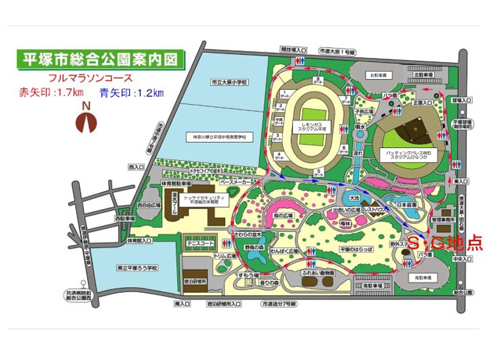

2023-12-19 04:57:40

| No | 開催日 | 曜 | 週 | 回数 |
| 1 | 1月14日 | 日 | ➁ | 第277回 |
| 2 | 2月11日 | 日 | ➁ | 第278回 |
| 3 | 3月10日 | 日 | ➁ | 第279回 |
| 4 | 4月14日 | 日 | ➁ | 第280回 |
| 5 | 5月12日 | 日 | ➁ | 第281回 |
| 6 | 6月9日 | 日 | ➁ | 第282回 |
| 7 | 7月14日 | 日 | ➁ | 第283回 |
| 8 | 8月11日 | 日 | ➁ | 第284回 |
| 9 | 9月8日 | 日 | ➁ | 第285回 |
| 10 | 10月13日 | 日 | ➁ | 第286回 |
| 11 | 11月10日 | 日 | ➁ | 第287回 |
| 12 | 12月8日 | 日 | ➁ | 第288回 |